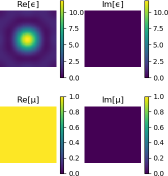

Getting started
This tutorial will help you get started with Peacock.jl for the first time.
We will install Peacock.jl, and then use it to study an example photonic crystal from a book (Joannopoulos et al 2008) by plotting the band structure and visualising the modes of the crystal.
Installation
Before using Peacock.jl for the first time, you should install it using the built-in Julia package manager.
using Pkg
Pkg.add("Peacock")After installation, the Peacock.jl can be loaded in Julia.
using PeacockFor this tutorial, we'll also install and load PyPlot to control our figures.
using Pkg
Pkg.add("PyPlot")
using PyPlotDefining the photonic crystal
In this section we will create a Geometry that holds the shape, size, and materials of the crystal.
The crystal we will reproduce in this tutorial is taken from chapter 5 of Joannopoulos et al 2008. It consists of dielectric cylinders ($\epsilon_\mathrm{cyl}=8.9, \mu_\mathrm{cyl}=1$) in air ($\epsilon_\mathrm{air}=1, \mu_\mathrm{air}=1$). The cylinders are arranged on a square lattice with separation $a$, and each cylinder has a radius of $r=a/5$.
First, let's define the functions epf(x,y) and muf(x,y), which return the permittivity and permeability of the unit cell at $(x,y)$, where $(0,0)$ is the center of the unit cell. We will work in units of length where the separation between cylinders is unity, $a=1$, such the radius of each cylinder is 0.2.
# Permittivity
function epf(x,y)
# equation of a circle with radius 0.2a
if x^2+y^2 <= 0.2^2
# dielectric inside the circle
return 8.9
else
# air outside the circle
return 1
end
end
# Permeability is unity everywhere
function muf(x,y)
return 1
endNow we declare the lattice parameters. The cylinders are on a square lattice, so our lattice vectors are orthogonal and of equal length a.
a1 = [1, 0] # first lattice vector
a2 = [0, 1] # second lattice vectorWe must also give the resolution at which the geometry should be generated at.
d1 = 0.01 # resolution along first lattice vector
d2 = 0.01 # resolution along second lattice vectorA smaller value of d1 or d1 will result in a higher resolution grid.
Finally, we are ready to construct and visualise our Geometry.
geometry = Geometry(epf, muf, a1, a2, d1, d2)
plot(geometry)
Setting up the solver
In this section we will create a Solver that approximates the geometry using a truncated Plane Wave Expansion (see further reading). The number of plane waves is determined by the cutoff. Increasing the cutoff will increase the accuracy of the solution, but low-contrast photonic crystals can be well approximated with a relatively small basis of plane waves.
fourier_space_cutoff = 7
solver = Solver(geometry, fourier_space_cutoff)Plotting the Solver lets you visualise how the Geometry has been approximated.
plot(solver)
Plotting the band structure
When light passes through a photonic crystal, the frequency of the wave, $\omega$, is related to its momentum, $\vec{k}$. It is common to plot the frequencies as a function of momentum, $\omega(\vec{k})$, to produce a "band diagram" (see Joannopolous et al 2008).
First, we must define the corners of a path through the Brillouin zone. We can use BrillouinZoneCoordinate to attach a label to our coordinates, so that our band diagram plots nicely.
G = BrillouinZoneCoordinate( 0, 0, "Γ")
X = BrillouinZoneCoordinate(1/2, 0, "X")
M = BrillouinZoneCoordinate(1/2, 1/2, "M")
ks = [G,X,M,G]Now we can call plot_band_diagram(solvers, ks, polarisation) to produce our diagram. If we provide the dk keyword argument, the path will be sampled so that the spacing between $k$-points is dk or smaller. The crystal behaves differently depending on the polarisation of light, so we plot the transverse electric (TE) polarised bands in red and the transverse magnetic (TM) polarised bands in blue.
figure(figsize=(4,3))
plot_band_diagram(solver, ks, TE, color="red",
bands=1:4, dk=0.1, frequency_scale=1/2pi)
plot_band_diagram(solver, ks, TM, color="blue",
bands=1:4, dk=0.1, frequency_scale=1/2pi)
ylim(0,0.8)
This reproduces figure 2 of chapter 5 of Joannopoulos et al 2008.
Plotting a mode
Often it is useful to visualise the electric and magnetic fields in the crystal. Here we show how to solve and plot the modes of a photonic crystal at a particular $k$-point.
First, we call solve, which returns an array of Modes.
modes = solve(solver, X, TM)A Mode can be visualised using plot(mode). By default the full Bloch wave is plotted - set bloch_phase=false to plot the cell-periodic part of Bloch mode.
plot(modes[2], bloch_phase=true)
plot(modes[2], bloch_phase=false)
The out of plane field component is plotted - for TE and TM polarisations this will be the magnetic and electric fields, respectively. The titles of the figures are set automatically using the label of the Mode.
This reproduces figure 3 of chapter 5 of Joannopoulos et al 2008. Note that Peacock.jl doesn't fix the phase of the solutions and your results may differ by a random phase.
Further reading
Plane Wave Expansion Method
- Rumpf, Raymond. "Design and optimization of nano-optical elements by coupling fabrication to optical behavior." (2006)
- Rumpf, Raymond. "Computational Electromagnetics lecture course." Available online.
Photonic crystals
- Joannopoulos, John D., et al. "Photonic crystals: molding the flow of light. 2008." Princeton Univ Press. Available online.